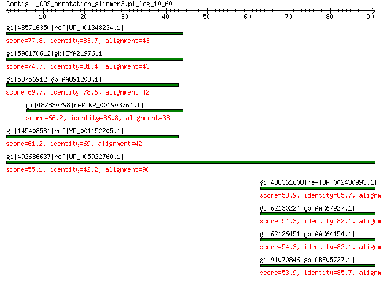

bitscore colors: <40, 40-50 , 50-80, 80-200, >200
 BLASTP 2.2.31+
Reference: Stephen F. Altschul, Thomas L. Madden, Alejandro A.
Schaffer, Jinghui Zhang, Zheng Zhang, Webb Miller, and David J.
Lipman (1997), "Gapped BLAST and PSI-BLAST: a new generation of
protein database search programs", Nucleic Acids Res. 25:3389-3402.
Reference for composition-based statistics: Alejandro A. Schaffer,
L. Aravind, Thomas L. Madden, Sergei Shavirin, John L. Spouge, Yuri
I. Wolf, Eugene V. Koonin, and Stephen F. Altschul (2001),
"Improving the accuracy of PSI-BLAST protein database searches with
composition-based statistics and other refinements", Nucleic Acids
Res. 29:2994-3005.
Database: All non-redundant GenBank CDS translations+PDB+SwissProt+PIR+PRF
excluding environmental samples from WGS projects
49,011,213 sequences; 17,563,301,199 total letters
Query= Contig-1_CDS_annotation_glimmer3.pl_log_10_60
Length=90
Score E
Sequences producing significant alignments: (Bits) Value
gi|485716350|ref|WP_001348234.1| hypothetical protein 77.8 6e-17
gi|596170612|gb|EYA21976.1| putative oRF58e 74.7 1e-15
gi|53756912|gb|AAU91203.1| hypothetical protein MCA2723 69.7 9e-14
gi|487830298|ref|WP_001903764.1| hypothetical protein 66.2 2e-12
gi|145408581|ref|YP_001152205.1| ORF58e 61.2 2e-10
gi|492686637|ref|WP_005922760.1| hypothetical protein 55.1 2e-07
gi|488361608|ref|WP_002430993.1| conserved hypothetical protein 53.9 2e-07
gi|62130224|gb|AAX67927.1| ORF16-lacZ fusion protein 54.3 2e-07
gi|62126451|gb|AAX64154.1| ORF16-lacZ fusion protein 54.3 2e-07
gi|91070846|gb|ABE05727.1| hypothetical protein UTI89_C0218 53.9 3e-07
>gi|485716350|ref|WP_001348234.1| hypothetical protein [Escherichia coli]
gi|342926018|gb|EGU94740.1| hypothetical protein HMPREF9349_05396 [Escherichia coli MS 79-10]
Length=43
Score = 77.8 bits (190), Expect = 6e-17, Method: Compositional matrix adjust.
Identities = 36/43 (84%), Positives = 38/43 (88%), Gaps = 0/43 (0%)
Query 1 MWFNSMQREEPYLLLTSREDLRDEVVPSGALRQVLHGCRQLVL 43
MWFNSMQREEPYL+LTS E RDE VPSG +RQVLHGCRQLVL
Sbjct 1 MWFNSMQREEPYLVLTSTEVFRDENVPSGTVRQVLHGCRQLVL 43
>gi|596170612|gb|EYA21976.1| putative oRF58e [Bacteroides fragilis str. 1007-1-F #3]
Length=43
Score = 74.7 bits (182), Expect = 1e-15, Method: Compositional matrix adjust.
Identities = 35/43 (81%), Positives = 38/43 (88%), Gaps = 0/43 (0%)
Query 1 MWFNSMQREEPYLLLTSREDLRDEVVPSGALRQVLHGCRQLVL 43
MWFNSMQREEPYL+LTS E RD +VPSG +RQVLHGCRQLVL
Sbjct 1 MWFNSMQREEPYLVLTSTELSRDGLVPSGTVRQVLHGCRQLVL 43
>gi|53756912|gb|AAU91203.1| hypothetical protein MCA2723 [Methylococcus capsulatus str. Bath]
gi|53758705|gb|AAU92996.1| hypothetical protein MCA0750 [Methylococcus capsulatus str. Bath]
Length=43
Score = 69.7 bits (169), Expect = 9e-14, Method: Compositional matrix adjust.
Identities = 33/42 (79%), Positives = 33/42 (79%), Gaps = 0/42 (0%)
Query 1 MWFNSMQREEPYLLLTSREDLRDEVVPSGALRQVLHGCRQLV 42
MWFNSMQREEPYL LT E RD VPSGA QVLHGCRQLV
Sbjct 1 MWFNSMQREEPYLALTCLESCRDAGVPSGAKTQVLHGCRQLV 42
>gi|487830298|ref|WP_001903764.1| hypothetical protein [Vibrio cholerae]
gi|148873070|gb|EDL71205.1| conserved hypothetical protein [Vibrio cholerae 623-39]
gi|148873104|gb|EDL71239.1| conserved hypothetical protein [Vibrio cholerae 623-39]
Length=38
Score = 66.2 bits (160), Expect = 2e-12, Method: Compositional matrix adjust.
Identities = 33/38 (87%), Positives = 33/38 (87%), Gaps = 0/38 (0%)
Query 6 MQREEPYLLLTSREDLRDEVVPSGALRQVLHGCRQLVL 43
MQREEPYLLLTSRE D VPSGALRQVLHGCRQLVL
Sbjct 1 MQREEPYLLLTSRESSGDAGVPSGALRQVLHGCRQLVL 38
>gi|145408581|ref|YP_001152205.1| ORF58e [Pinus koraiensis]
gi|145048830|gb|ABP35448.1| ORF58e [Pinus koraiensis]
Length=58
Score = 61.2 bits (147), Expect = 2e-10, Method: Compositional matrix adjust.
Identities = 29/42 (69%), Positives = 30/42 (71%), Gaps = 0/42 (0%)
Query 1 MWFNSMQREEPYLLLTSREDLRDEVVPSGALRQVLHGCRQLV 42
MWFNSMQ EEPY LT RE R VPSG QV+HGCRQLV
Sbjct 16 MWFNSMQSEEPYQGLTCRESSRKRGVPSGTRTQVVHGCRQLV 57
>gi|492686637|ref|WP_005922760.1| hypothetical protein [Faecalibacterium prausnitzii]
gi|158445127|gb|EDP22130.1| hypothetical protein FAEPRAM212_01166 [Faecalibacterium prausnitzii
M21/2]
Length=163
Score = 55.1 bits (131), Expect = 2e-07, Method: Compositional matrix adjust.
Identities = 38/101 (38%), Positives = 51/101 (50%), Gaps = 25/101 (25%)
Query 1 MWFNSMQREEPYLLLTSREDLRDEVVPSGALRQVLHGCRQLVLWNVGLSPATSATLILC- 59
MWFNS QREEPY +LTS +D + + +LR G L +SA ++ C
Sbjct 1 MWFNSTQREEPYQVLTSLDDAGNSI----SLRSKETGGAWL----------SSARVVRCW 46
Query 60 ----------CQRVKAGTQRRLPVINRRKVGMTSSHHGPYE 90
Q ++ T RLP+ RRKVGMTS+HH Y+
Sbjct 47 VKSRNERNPYGQLLRKRTLARLPLTKRRKVGMTSNHHALYD 87
>gi|488361608|ref|WP_002430993.1| conserved hypothetical protein, partial [Escherichia sp. 3_2_53FAA]
gi|226903376|gb|EEH89635.1| hypothetical protein ESAG_07160, partial [Escherichia sp. 3_2_53FAA]
Length=73
Score = 53.9 bits (128), Expect = 2e-07, Method: Compositional matrix adjust.
Identities = 24/28 (86%), Positives = 26/28 (93%), Gaps = 0/28 (0%)
Query 63 VKAGTQRRLPVINRRKVGMTSSHHGPYE 90
V+ GTQRRLPVIN RKVGMTSSHHGPY+
Sbjct 26 VRPGTQRRLPVINWRKVGMTSSHHGPYD 53
>gi|62130224|gb|AAX67927.1| ORF16-lacZ fusion protein [Salmonella enterica subsp. enterica
serovar Choleraesuis str. SC-B67]
Length=106
Score = 54.3 bits (129), Expect = 2e-07, Method: Compositional matrix adjust.
Identities = 23/28 (82%), Positives = 27/28 (96%), Gaps = 0/28 (0%)
Query 63 VKAGTQRRLPVINRRKVGMTSSHHGPYE 90
+++GTQRRLPVIN RKVGMTSSHHGPY+
Sbjct 5 IRSGTQRRLPVINWRKVGMTSSHHGPYD 32
>gi|62126451|gb|AAX64154.1| ORF16-lacZ fusion protein [Salmonella enterica subsp. enterica
serovar Choleraesuis str. SC-B67]
gi|62130005|gb|AAX67708.1| ORF16-lacZ fusion protein [Salmonella enterica subsp. enterica
serovar Choleraesuis str. SC-B67]
gi|62130087|gb|AAX67790.1| ORF16-lacZ fusion protein [Salmonella enterica subsp. enterica
serovar Choleraesuis str. SC-B67]
Length=106
Score = 54.3 bits (129), Expect = 2e-07, Method: Compositional matrix adjust.
Identities = 23/28 (82%), Positives = 27/28 (96%), Gaps = 0/28 (0%)
Query 63 VKAGTQRRLPVINRRKVGMTSSHHGPYE 90
+++GTQRRLPVIN RKVGMTSSHHGPY+
Sbjct 5 IRSGTQRRLPVINWRKVGMTSSHHGPYD 32
>gi|91070846|gb|ABE05727.1| hypothetical protein UTI89_C0218 [Escherichia coli UTI89]
gi|91074857|gb|ABE09738.1| hypothetical protein UTI89_C4312 [Escherichia coli UTI89]
gi|91074972|gb|ABE09853.1| hypothetical protein UTI89_C4437 [Escherichia coli UTI89]
gi|91075094|gb|ABE09975.1| hypothetical protein UTI89_C4564 [Escherichia coli UTI89]
Length=106
Score = 53.9 bits (128), Expect = 3e-07, Method: Compositional matrix adjust.
Identities = 24/28 (86%), Positives = 26/28 (93%), Gaps = 0/28 (0%)
Query 63 VKAGTQRRLPVINRRKVGMTSSHHGPYE 90
V+ GTQRRLPVIN RKVGMTSSHHGPY+
Sbjct 5 VRPGTQRRLPVINWRKVGMTSSHHGPYD 32
Lambda K H a alpha
0.323 0.135 0.425 0.792 4.96
Gapped
Lambda K H a alpha sigma
0.267 0.0410 0.140 1.90 42.6 43.6
Effective search space used: 438678852570